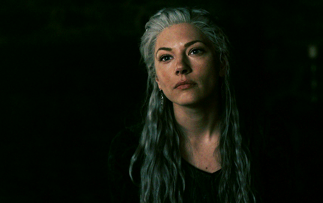

VISENYA TARGARYEN

"Não foi só Aegon e seu dragão, Rhaenys e Visenya também... Rhaenys montava Meraxes, Visenya montava Vhagar... Visenya Targaryen era uma grande guerreira. Ela tinha uma espada de aço valiriano chamada Irmã Negra." ―Arya Stark
Visenya era irmã de Aegon e Rhaenys, e nasceu em Pedra do Dragão, a fortaleza Targaryen no Mar Estreito. Seguindo o costume valiriano, ela e Rhaenys se casaram com Aegon. Todos os três irmãos eram cavaleiros de dragão, com Visenya montando Vhagar. Ela também empunhava a espada de aço valiriano conhecida como Irmã Negra. Nascida em 29 a.C. Na ilha de Pedra do Dragão, Visenya era a filha mais velha de Lorde Aerion Targaryen e Lady Valaena Velaryon . Seus dois irmãos mais novos, Aegon e Rhaenys , nasceram poucos anos após seu nascimento.Desde jovem, Visenya treinou junto com Aegon em armas, e ela se tornou uma guerreira habilidosa.